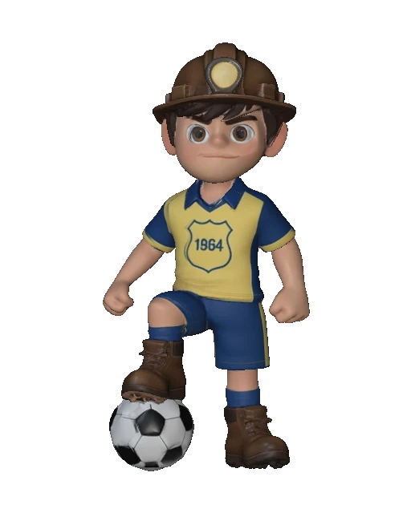
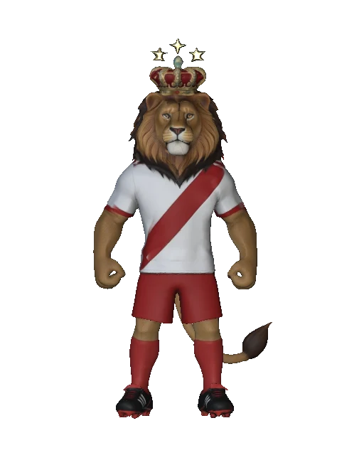
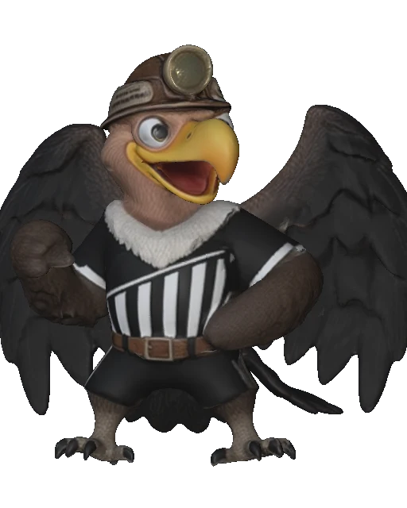

Estadio Serrafin
Ferreira de Catavi
Orgullo cataveño
Un templo de tradicion y futbol.
0%
Iniciando motor 3D…
05Estaciones
04Escudos ocultos
01Cancha Media
MASCOTAS DE LOS TRES GRANDES DE LLALLAGUA01 — 03

BALLIVIAN FUTBOL CLUB

RACING SPORTING CLUB
Los escudos no se muestran.
Se descubren.E
Se descubren.E